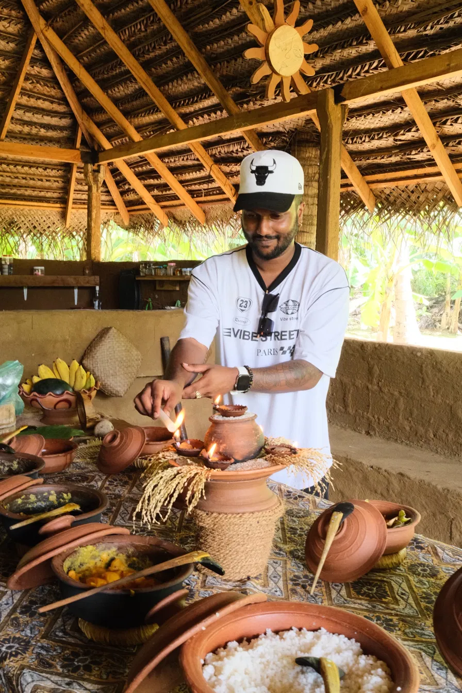
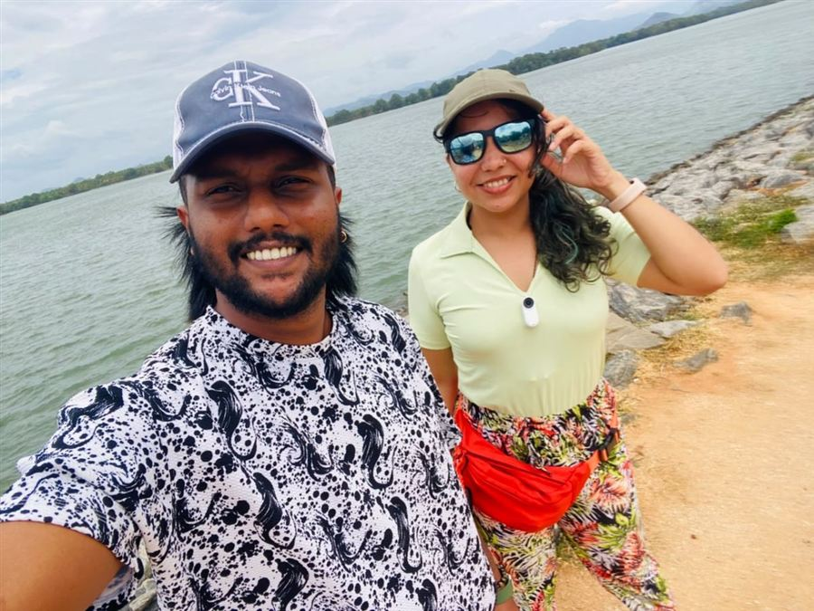
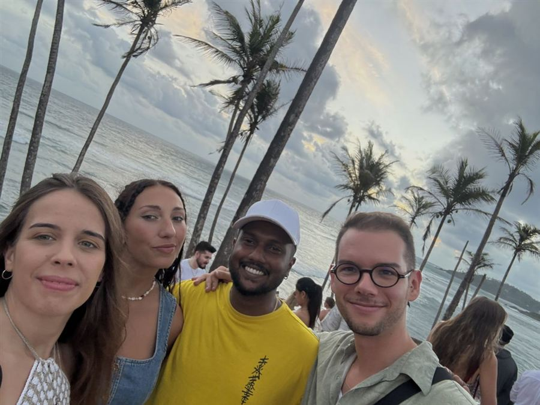
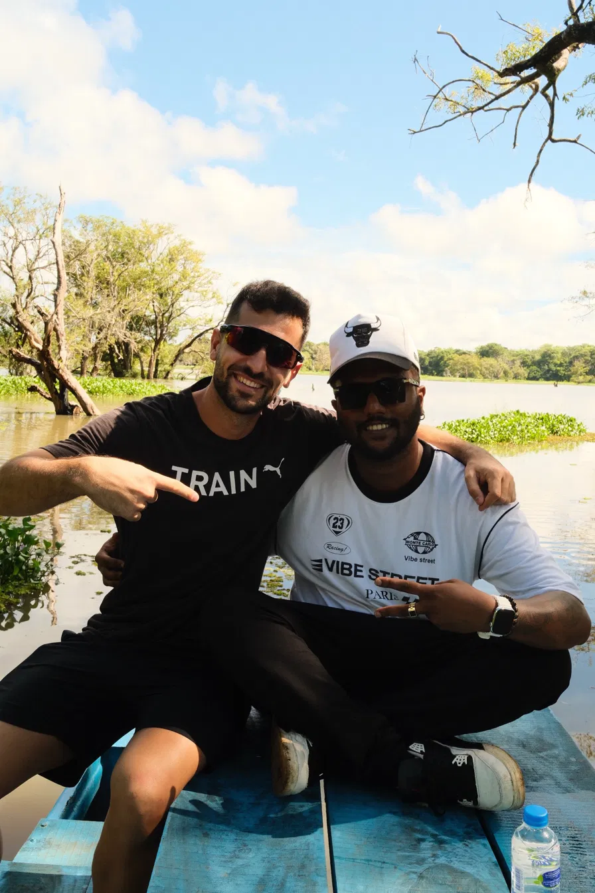
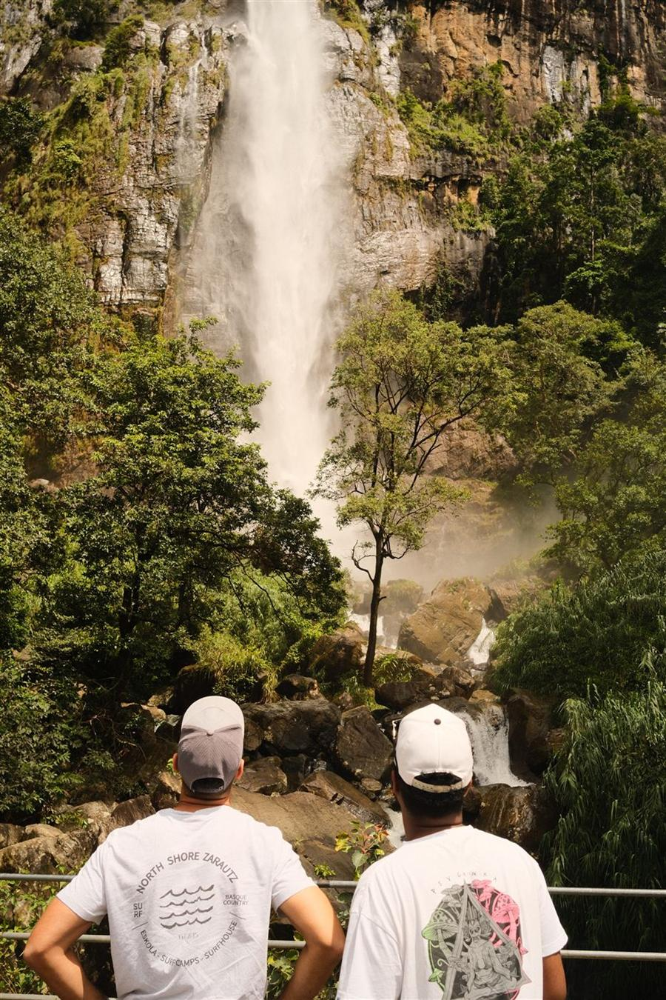
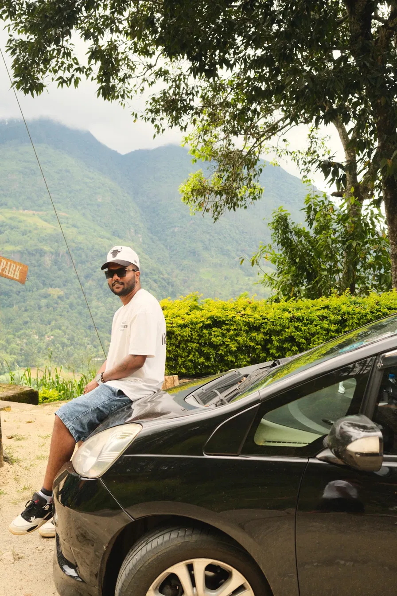

Darshi · Conductor privado en Sri LankaDarshi · Private driver in Sri Lanka Come as a guest, leave as amigo
«No se trata solo de enseñarte Sri Lanka, sino de compartir los pequeños momentos, pasarlo bien y hacer nuevos amigos por el camino.»“It's not just about showing you Sri Lanka, it's about sharing the little moments, having fun, and making new friends along the way.”
— Darshi
Foto provisional · ideal: Darshi junto al coche, sin gafas, sonriendo a cámara, con paisajePlaceholder · ideal: Darshi by the car, no sunglasses, smiling
ආයුබෝවන්Ayubowan: «que vivas mucho», así damos la bienvenida en Sri LankaAyubowan means "may you live long". It's how we say welcome in Sri Lanka.
Un poco sobre míA little about me
Soy Darshi. Empecé llevando viajeros por Sri Lanka con una agencia y hoy organizo mis propios recorridos con Amigos Paradise Tours. He viajado con parejas, familias, grupos de amigos y personas que venían solas. Me gusta compartir los lugares de mi país y los momentos que surgen por el camino. Y la música siempre ha sido una de mis pasiones.
No soy una gran agencia: trabajo por mi cuenta, recibo personalmente a cada viajero y organizo cada viaje como si fuera el mío.
I'm Darshi. I started taking travellers around Sri Lanka with an agency, and now I organise my own trips with Amigos Paradise Tours. I've travelled with couples, families, groups of friends and people travelling on their own. I like showing people my country and sharing the little moments along the way. And music has always been one of my passions.
I'm not a big travel agency: I work independently, welcome every guest personally and organise each trip as if it were my own.
«Siempre he querido ayudar a los demás y hacer el bien, y ahora ese propósito se ha convertido en mi trabajo, y lo hago con todo mi corazón.»“I've always wanted to help others and do good, and now that purpose has become my work — and I'm doing it with my whole heart.”

Foto provisional · ideal: retrato cercano, sin gafas, mirando a cámaraPlaceholder · ideal: close portrait, no sunglasses
OpinionesReviews
Experiencias de otros viajerosTravellers' experiences
Vídeo pendienteVideo to comeClaudia y Gerard cuentan su viaje · vertical, 40–60 s, con subtítulosClaudia and Gerard talk about their trip · vertical, 40–60 s, subtitled
Frase literal del vídeo, pendienteLiteral line from the video, to come
Claudia & Gerard · Barcelona · noviembre de 2026November 2026
Foto de Iñaki y su grupo con DarshiPhoto of Iñaki and his group with Darshi
“Fuimos cuatro amigos a recorrer Sri Lanka y acabamos siendo cinco. Desde el primer día fue uno más del grupo. Nos hemos reído muchísimo con él, hemos compartido mil momentos… Nos llevamos un viajazo, un montón de anécdotas y, lo mejor de todo, un amigo en Sri Lanka.”
“Four of us friends travelled around Sri Lanka and we ended up being five. From the first day he was one more of the group. We laughed so much with him and shared a thousand moments… We came home with an amazing trip, lots of stories and, best of all, a friend in Sri Lanka.”

“Incluso me enseñó algo de cingalés y cantamos en el coche, ¡además es un rapero con mucho talento! Como viajera sola, la seguridad era una gran preocupación para mí, pero ¡le recomiendo al 100 % a cualquiera!”
“He even taught me some Singalese and we sang in the car, he is super talented rapper too! As a solo female traveller, safety was a big concern for me, but I can recommend him 100% to anyone!”
Ver original
“He even taught me some Singalese and we sang in the car, he is super talented rapper too! As a solo female traveller, safety was a big concern for me, but I can recommend him 100% to anyone!”

“Nos conocimos por casualidad y lo que empezó como un día de coche se convirtió en una gran amistad. Pasamos la mitad de nuestro viaje por Sri Lanka con él, y no solo porque lo necesitáramos, sino porque lo estábamos disfrutando muchísimo.”
“We met by coincidence and what it started as a day drive it became a great friendship. We spent half of our journey in Sri Lanka with him and not only because we needed but because we were enjoying so much.”
Ver original
“We met by coincidence and what it started as a day drive it became a great friendship. We spent half of our journey in Sri Lanka with him and not only because we needed but because we were enjoying so much.”
Foto de Ricardo con DarshiPhoto of Ricardo with Darshi
“Conduce super bien, muy cuidadoso con todo y siempre ayudándonos con el idioma y cuidándonos. Habla inglés perfecto y se le entiende super bien. Fue maravilloso, volvería a contratarle, lo recomiendo 100%.”
“He drives really well, he's very careful with everything and he was always helping us with the language and looking after us. He speaks perfect English and he's really easy to understand. It was wonderful, I would hire him again, I recommend him 100%.”
Original
“Conduce super bien, muy cuidadoso con todo y siempre ayudándonos con el idioma y cuidándonos. Habla inglés perfecto y se le entiende super bien. Fue maravilloso, volvería a contratarle, lo recomiendo 100%.”
Ver más opiniones (7)Read more reviews (7)
Foto de Amaya con DarshiPhoto of Amaya with Darshi
“Estuvimos 12 días con Darshik… muy atento en todo, muy puntual, nos ayudó en todo momento y desde el primer día el trato y las recomendaciones de sitios nuevos menos turísticos, fue de amigo.”
“We spent 12 days with Darshik… very attentive in everything, very punctual, he helped us at all times, and from the first day the way he treated us and his recommendations of new, less touristy places were those of a friend.”
Original
“Estuvimos 12 días con Darshik… muy atento en todo, muy puntual, nos ayudó en todo momento y desde el primer día el trato y las recomendaciones de sitios nuevos menos turísticos, fue de amigo.”
Foto de Matt con DarshiPhoto of Matt with Darshi
“¡Darshi fue el mejor conductor que tuvimos en Sri Lanka! Sabe mucho, le encanta charlar y se adaptó a todas nuestras paradas. ¡Se lo recomendaría a cualquiera!”
“Darshi was the best driver we had in Sri Lanka! Knowledgeable, chatty and so accommodating to our stops. I’d recommend him to anyone!”
Ver original
“Darshi was the best driver we had in Sri Lanka! Knowledgeable, chatty and so accommodating to our stops. I’d recommend him to anyone!”
Foto de Thorben y Anna con DarshiPhoto of Thorben and Anna with Darshi
“Darshi fue un conductor muy simpático y totalmente de confianza. Tuvimos muchísimas conversaciones bonitas en nuestras rutas y nos hicimos buenos amigos.”
“Darshi was a very friendly and absolute reliable driver. We had so many nice conversations on our tours and became good friends!”
Ver original
“Darshi was a very friendly and absolute reliable driver. We had so many nice conversations on our tours and became good friends!”
Foto de Lluís con DarshiPhoto of Lluís with Darshi
“Darshi fue el mejor guía que podríamos haber tenido en Sri Lanka. Hace un trabajo increíble y te hace sentir como en casa. Recomendamos totalmente esta experiencia, ¡merece muchísimo la pena!”
“Darshi was the best guide we could have had in Sri Lanka. He does an amazing job and he makes you feel at home. We totally recommend this experience, it is totally worth it!”
Ver original
“Darshi was the best guide we could have had in Sri Lanka. He does an amazing job and he makes you feel at home. We totally recommend this experience, it is totally worth it!”
Foto de Kyra con DarshiPhoto of Kyra with Darshi
“Darshi es increíblemente amable, divertido, te apoya en todo y es el conductor y guía perfecto. Mucha gente en Sri Lanka es amable, pero él es único. ¡Muy recomendable, y espero volver a verte pronto!”
“Darshi is incredible kind, funny, supportive and the perfect driver/guide. Many natives in Sri Lanka are friendly people but he is one of a kind. Highly recommended and hope to see you again soon!”
Ver original
“Darshi is incredible kind, funny, supportive and the perfect driver/guide. Many natives in Sri Lanka are friendly people but he is one of a kind. Highly recommended and hope to see you again soon!”
Foto de Melody con DarshiPhoto of Melody with Darshi
“Darshi fue mi conductor en un viaje de 8 días por Sri Lanka y ¡lo pasé genial con él! Conoce muy bien el país y es una persona amable y hospitalaria. ¡Muy recomendable!”
“Had Darshi as my driver for an 8 day trip to Sri Lanka and had the best time with him! He knows the country well and is a kind and hospitable person. Highly recommend!”
Ver original
“Had Darshi as my driver for an 8 day trip to Sri Lanka and had the best time with him! He knows the country well and is a kind and hospitable person. Highly recommend!”
Foto de Charline con DarshiPhoto of Charline with Darshi
“Recomiendo de verdad viajar con Darshi: ¡hará que cada excursión sea excepcional! Además, es una persona muy simpática y cálida, y eso lo hace todo mágico. ¡Volvería con él al 1000 %!”
“I highly recommend going with Darshi: he will make every excursion exceptional! He's also a very friendly and warm person, which makes it all magical. I'd go with him again 1000%!”
Ver originalOriginal
“Je conseille vivement de passer par Darshi, il rendra chaque excursion exceptionnelle ! De plus, c’est quelqu’un de très sympathique et chaleureux ! Ce qui rendra le tout magique… je repasserai par lui à 1000%”
Lugares escondidos, experiencias realesHidden places, real experiences

Provisional · ideal: Darshi con viajeros preparando la ruta con un mapaPlaceholder · ideal: Darshi planning the route with travellers
La ruta, la preparamos juntosWe plan the route together
Me cuentas tus fechas, tu idea de ruta o los lugares que te interesan, y la ajustamos juntos. En Sri Lanka las distancias engañan: en la montaña, pocos kilómetros pueden ser horas de carretera. Por eso preparamos el recorrido con tiempos reales y vemos dónde te apetece parar por el camino.
Tell me your dates, your route idea or the places you're interested in, and we'll fine-tune it together. In Sri Lanka distances are deceiving: in the hills, a few kilometres can mean hours on the road. So we plan the route with real driving times and see where you'd like to stop along the way.

Provisional · ideal: comida casera con gente localPlaceholder · ideal: home-cooked food with locals
Recomendaciones por el caminoRecommendations along the way
Te propongo sitios para visitar y comer, también menos turísticos, y te ayudo a organizar safaris y a conseguir entradas y billetes. Las entradas y actividades se pagan aparte.
I suggest places to visit and eat, including less touristy ones, and help you arrange safaris and get entrance and train tickets. Tickets and activities are paid separately.
Foto pendientePhoto to comeLas vistas desde el tren a Ella, o vosotros asomados a la ventanillaThe views from the Ella train, or travellers at the window
El tren a Ella, sin cargar con las maletasThe train to Ella, without carrying your luggage
El tramo de montaña hasta Ella es uno de los trayectos en tren más bonitos del mundo: plantaciones de té, cascadas y valles desde la ventanilla. Te ayudo a conseguir los billetes, que en temporada alta se agotan pronto. Mientras tú disfrutas del paisaje, yo llevo las maletas en el coche y te recojo en la estación. Los billetes se pagan aparte.
The mountain stretch to Ella is one of the most beautiful train rides in the world: tea plantations, waterfalls and valleys from the window. I help you get tickets, which sell out early in high season. While you enjoy the views, I take your luggage in the car and pick you up at the station. Train tickets are paid separately.
Te ayudo a orientarteHelping you find your way
Como viajar con un amigo que vive aquíLike travelling with a friend who lives here
Te digo cuánto es justo pagar por un tuk-tuk, una entrada o un recuerdo, y cuando puedo te consigo mejor precio con gente que conozco.
Te llevo a cambiar dinero y a comer a sitios de confianza.
Te explico cómo funcionan las cosas: los templos, las costumbres, qué ropa llevar.
Si algo no te conviene, te lo digo. Por ejemplo, si no te gustan las ciudades, igual te propongo saltarte Colombo y dedicar ese tiempo a un sitio que vayas a disfrutar más.
I tell you what's fair to pay for a tuk-tuk, a ticket or a souvenir, and when I can I get you a better price through people I know.
I take you to change money and to eat at places you can trust.
I explain how things work: temples, customs, what to wear.
If something isn't right for you, I'll tell you. For example, if cities aren't your thing, I may suggest skipping Colombo and spending that time somewhere you'll enjoy more.
Afinar con las anécdotas reales de Claudia y GerardRefine with Claudia and Gerard's real stories
“Siempre de buen rollo, pendiente de que no nos faltara nada y dispuesto a ayudarnos con cualquier cosa. Da gusto encontrarse con gente así cuando estás tan lejos de casa.”
“Always in a good mood, making sure we had everything we needed and ready to help us with anything. It's so good to meet people like that when you're so far from home.”
Iñaki · EspañaSpain · translated from Spanish
Antes y durante el viaje, cuenta conmigoBefore and during your trip, count on me
Antes del viajeBefore the trip
Preparar la ruta: mejoro la tuya o, si llegas sin plan, la diseño entera según tu tiempo, tus intereses y tu presupuesto
Billetes del tren a Ella
Jeeps de safari y entradas
Planning the route: I improve yours or, if you come without a plan, I design it all around your time, interests and budget
Tickets for the Ella train
Safari jeeps and entrance tickets
Al llegarOn arrival
Te espero en el lugar que acordemos
Agua en el coche
Dónde cambiar dinero
I meet you wherever we agree
Water in the car
Where to change money
Durante el viajeDuring the trip
Salidas al amanecer, con menos calor y menos gente
Te cuento lo que vamos viendo
Comida casera con gente local y sitios menos turísticos
Te oriento sobre los precios y, cuando puedo, te consigo algún descuento
Las maletas en el coche el día del tren
Plan B si llueve, y cambios sobre la marcha
Puedes escribirme si necesitas ayuda durante el viaje
Sunrise starts, with less heat and fewer people
I tell you about what we see along the way
Home-cooked food with locals and less touristy spots
Tips on fair prices and, when I can, a discount
Your luggage in the car on train day
A plan B if it rains, and changes on the go
Message me if you need help during the trip

Provisional · ideal: exterior del coche limpioPlaceholder · ideal: clean car exterior
Maletero con maletas realesBoot with real luggage
El cocheThe car
El coche para tu viajeThe car for your trip
VehículoVehicleCoche privado con aire acondicionadoPrivate car with air conditioning
PasajerosPassengers4: 1 delante y 3 detrás4: 1 in the front, 3 at the back
EquipajeLuggageUnas 4 maletas grandesAbout 4 large suitcasesConfirmar que caben con las 4 plazas ocupadasConfirm they fit with all 4 seats taken
AguaWaterDisponible en el cocheAvailable in the car
Grupos más grandesLarger groupsPuedo organizar una furgonetaI can arrange a van
Puedes elegir la música. Si prefieres descansar, lo respeto.You can choose the music. If you'd rather rest, I'll respect that.
Presupuesto y reservaQuote and booking
Un presupuesto para la ruta que acordemosA quote for the route we agree on
El precio depende de los días, la ruta, el número de viajeros y el vehículo. Te envío por WhatsApp la ruta y el precio total, con lo que incluye y lo que se paga aparte.The price depends on the number of days, the route, the number of travellers and the vehicle. I'll send you the route and total price on WhatsApp, with what's included and what's paid separately.
Incluido en el presupuestoIncluded in your quote
Coche privado con aire acondicionado y conductor para el recorrido acordado
Combustible, peajes y aparcamientos
Mi alojamiento y mis comidas
Recomendaciones y ayuda local durante el viaje
Ayuda para preparar la ruta y organizar actividades
Private car with air conditioning and driver for the agreed route
Fuel, tolls and parking
My accommodation and meals
Local tips and help during the trip
Help planning the route and arranging activities
Si cambiamos la ruta durante el viaje, siempre hablamos antes de cualquier cambio de precio. Nunca vas a tener un gasto que no conozcas.If we change the route during the trip, we always talk about any price change first. You'll never face a cost you didn't know about.
Se paga apartePaid separately
Tu alojamiento y tus comidas
Entradas, safaris y jeeps
Billetes de tren
Your accommodation and meals
Entrance tickets, safaris and jeeps
Train tickets
Cómo organizamos la reservaHow to book
Me escribes con tus fechas y el número de viajeros.
Hablamos de la ruta y te confirmo disponibilidad y precio.
Antes de reservar, dejamos por escrito los detalles del viaje y las condiciones de pago y cancelación.
Message me with your dates and the number of travellers.
We talk about the route and I confirm availability and price.
Before you book, we confirm the trip details and the payment and cancellation terms in writing.
¿Conduces tú todos los días del viaje?Will you be the driver throughout the trip?
Conduzco yo siempre que estoy disponible. Si ya tengo otra reserva o no puedo conducir por algún motivo, cuento con una comunidad de conductores profesionales de confianza. En ese caso te asigno uno y coordino yo mismo todo el viaje, de principio a fin, para que todo salga como esperas.
I drive my guests myself whenever I'm available. If I already have another booking or can't drive for any reason, I have a trusted community of professional drivers. I arrange one of them and coordinate the whole trip myself, from beginning to end, so everything goes the way you expect.
Mi inglés es muy básico. ¿Podremos entendernos?My English is very basic. Will we understand each other?
Sí. Muchos de mis viajeros llegan con un inglés muy básico y acaban soltándose durante el viaje. Hablo claro, sin prisas, y me adapto a cada persona; estoy acostumbrado a entender a quien le faltan palabras. Lo cuenta Ricardo: «Habla inglés perfecto y se le entiende super bien». Además, sigo aprendiendo español.
Si te da miedo, antes de reservar hablamos por videollamada o con notas de voz, y así ves cómo nos entendemos.
Yes. Many of my guests arrive with very basic English and end up speaking more and more during the trip. I speak clearly, take my time and adapt to each person; I'm used to understanding people who are short of words. As Ricardo put it: “He speaks perfect English and he's really easy to understand.” I'm also learning Spanish.
If you're worried, we can have a video call or swap voice notes before you book, so you can see how we understand each other.
Añadir lo que contéis Claudia y Gerard sobre el idiomaAdd Claudia and Gerard on the language
¿Cómo organizamos los trayectos?How do we organise the drives?
No me gusta llevar a nadie con prisas de un sitio a otro. Prefiero un ritmo cómodo y flexible, con tiempo para visitar, comer, hacer fotos y descansar. Los horarios de cada día los organizamos según la ruta y lo que prefieras.
I don't like rushing guests from one place to another. I prefer a comfortable, flexible rhythm, with time for sightseeing, meals, photos and rest. We organise each day's times around the route and what you prefer.
¿Puedo viajar sola o solo?Can I travel with you on my own?
Sí, también he viajado con personas que venían solas. Puedes leer sus experiencias arriba y contarme qué viaje estás preparando.
Yes, I've also travelled with people on their own. You can read their experiences above and tell me what trip you're planning.
¿Viajas con familias con niños?Do you travel with families with children?
Sí, viajo a menudo con familias con niños. Tengo una silla de bebé para el coche y, si no se ajusta a la edad o al tamaño del niño, consigo una adecuada.
Yes, I often travel with families with children. I have a baby car seat and, if it doesn't suit the child's age or size, I arrange a suitable one.
¿Entras con nosotros en las visitas?Do you come with us on the visits?
Siempre que puedo, sí: me gusta descubrir Sri Lanka con mis viajeros, no esperar en el coche. En los yacimientos arqueológicos y los lugares religiosos hay guías oficiales, y respeto sus normas. En miradores, cascadas y otros sitios, si el aparcamiento lo permite, suelo ir contigo.
Whenever possible, yes: I enjoy exploring Sri Lanka with my guests rather than waiting in the car. Archaeological and religious sites have official guides, and I respect their rules. At viewpoints, waterfalls and other places, if parking allows, I usually come with you.
¿Tu alojamiento y tus comidas están incluidos?Are your accommodation and meals included?
Sí. Mi alojamiento y mis comidas durante el viaje están incluidos en el presupuesto.
Yes. My accommodation and meals during the trip are included in the quote.
¿Podemos hacer una parte de la ruta en tren?Can we take the train for part of the route?
Sí, lo tenemos en cuenta al preparar la ruta y acordamos la estación donde te recojo y cómo va el equipaje. Los billetes se pagan aparte.
Yes, we include it when planning the route and agree where I'll pick you up and how we'll transport your luggage. Train tickets are paid separately.
¿Y si llego de madrugada o se retrasa el vuelo?What if I land at night or my flight is delayed?
No pasa nada. Antes de que llegues te pido los datos del vuelo y lo sigo, así sé cuándo aterrizas. Normalmente te espero yo mismo en el aeropuerto, aunque llegues de madrugada o con retraso. Si prefieres descansar primero en un hotel junto al aeropuerto, también puedo recogerte al día siguiente.
It's not a problem at all. Before you arrive I ask for your flight details and track your flight, so I know when you land. I usually meet you at the airport myself, even late at night or if the flight is delayed. If you'd rather rest first at a hotel near the airport, I can also pick you up the next day.
¿Cuál es la mejor época para ir?When is the best time to go?
Sri Lanka tiene dos monzones, así que la época influye en qué zonas conviene incluir. Por ejemplo, las ballenas de Mirissa se ven sobre todo de noviembre a abril, y en julio o agosto, según el año, Kandy celebra la Esala Perahera, su gran festival. Cuéntame tus fechas y lo que te gustaría conocer, y te propongo la ruta que mejor encaje.
Sri Lanka has two monsoons, so the time of year affects which areas to include. For example, whales off Mirissa are mostly seen from November to April, and in July or August, depending on the year, Kandy holds the Esala Perahera, its great festival. Tell me your dates and what you'd like to see, and I'll suggest the route that fits best.
¿Nos llevarás a jardines de especias o a tiendas de piedras preciosas?Will you take us to spice gardens or gem shops?
No. No trabajo con tiendas ni restaurantes a comisión. Para mí, que estés contento es más importante, y quiero que confíes en que te recomiendo las cosas por lo que te interesa, no por lo que yo gano. Además, creo en el karma. Si puedo negociar un mejor precio o un descuento, siempre lo intento.
Una cosa que es bueno saber: en muchos restaurantes de zonas turísticas es habitual invitar a comer al conductor. Es una costumbre del sector, no una comisión.
No. I don't work with commission-based shops or restaurants. Your happiness matters more to me, and I want you to trust that I recommend things for your interests, not for what I earn. I also believe in karma. If I can get you a better price or a discount, I always try.
Good to know: many restaurants in tourist areas traditionally offer drivers a free meal. It's a normal custom in the industry, not a commission.
¿Se deja propina?Should we tip?
Las propinas siempre se agradecen, pero nunca son obligatorias. Para mí son una bonita señal de que estás contento con el viaje, sea la cantidad que sea.
Tips are always appreciated, but never expected or compulsory. For me, a tip is a lovely sign that you're happy with the trip, whatever the amount.
¿Cómo se paga y qué pasa si cancelo?How do I pay, and what if I cancel?
Pido una pequeña señal para reservar tus fechas solo para ti, y el resto se paga durante el viaje. Antes de confirmar te envío por escrito la ruta, los detalles y las condiciones.
La señal normalmente no se devuelve, porque en cuanto confirmo tus fechas rechazo otros viajes. Pero entiendo que puede haber imprevistos: si cancelas con tiempo, sobre todo un mes antes, lo hablamos y, si es posible, te la devuelvo. Y si hay un motivo de peso, siempre busco una solución justa.
I ask for a small advance payment to reserve your dates just for you, and the rest is paid during the trip. Before confirming, I send you the route, the details and the conditions in writing.
The advance payment is usually non-refundable, because once I confirm your dates I turn down other trips. But I understand unexpected things happen: if you cancel well in advance, especially around a month before, we talk about it and, where possible, I refund it. And if there's a genuine reason, I always try to find a fair solution.
¿Estás preparando tu viaje a Sri Lanka?Planning a trip to Sri Lanka?
Cuéntame tus fechas y el número de viajeros. Podemos empezar por ahí.Tell me your dates and how many of you are travelling. We can start from there.